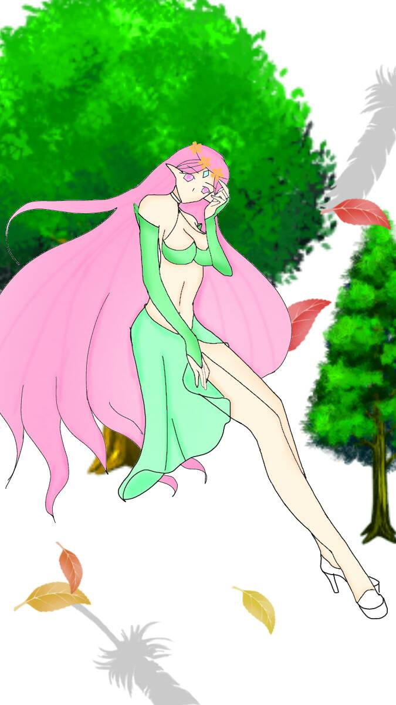

世界 The World
元素土
對應牌10命運之輪
對應星座土星
牌義世界女神繞著圓圈的形狀跳舞，慶祝著永恆的完滿，她是這個世界的背景，
她無所不在的隱含在萬物的生命之中。直到我們發現她為止。對她而言，沒有時間存在，
但時間卻繞著她運行，她手握勝利的權丈，被金牛、獅子、老鷹和天蠍四個活物包圍，四個活物代表四季，
和物質世界的循環，世界的成功是回到內心真正的家，也是在無始無終的自性里安歇， “完美”為依歸。
關鍵語完成、完整、自由、實現、勝利★暗示擁有發自內心的快樂和持久的成功
牌正面成功，自信，實現，內心滿足，環遊世界。
牌反面已成功但又失去，因為認知不夠全然,可能有更艱難的挑戰在後面。
世界牌(21號牌)是22張大牌的最後一張，也是愚人(0號牌到21號牌)靈性成長旅程的終點，
世界的牌中心的圓圈象徵生命萬物的生生不息，不斷循環，結束這段旅程的同時，另一個旅程也正準備開始。
為什麼要刻意強調0號到21號的過程呢，因為世界除了代表旅程的「終點」，也代表「收成」之前努力的成果，以及「完成」了這趟旅程的使命。
「世界牌」與「太陽牌」所指的成功也不太一樣，「世界牌」代表的是一個階段性的成功，或是完成了某個階段的最終目標；「太陽牌」比較偏向是指某一件事情的成功。
離開卡牌